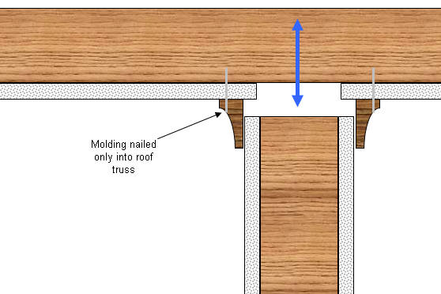
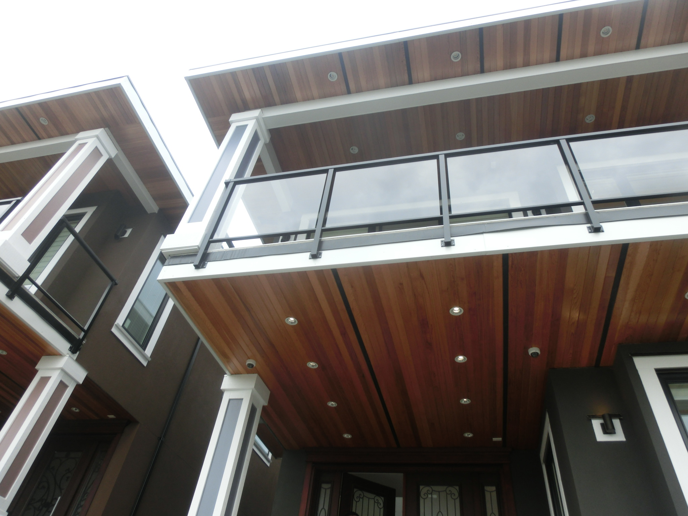
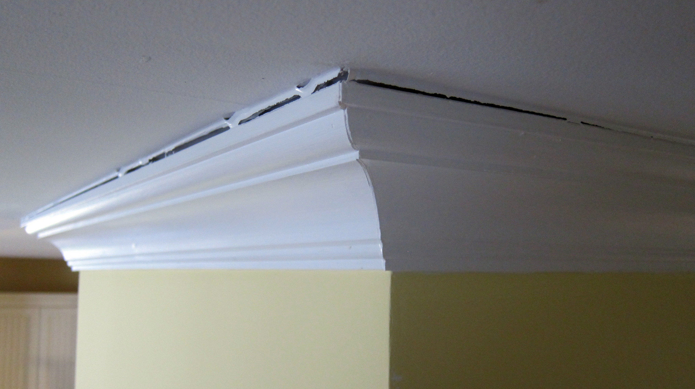
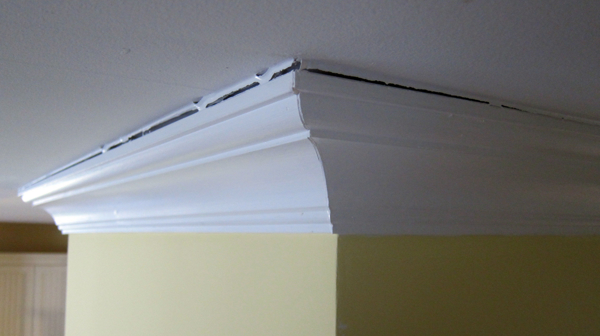

| 温哥华验房师验屋师范胜利 Reliance Home Inspection |
 |
|
结构出了问题还是装修出了问题？这是一个只有两年新的独立屋。整体装修十分豪华，不过二层几个卧室的天花板上的molding顶角线都出现了密封胶开裂的现象。 买家是一对年轻的夫妇，女主人对这个密封胶开裂的现象一直惴惴不安，担心是结构上出了问题。因为不是某一个房间的顶角线出了问题，而是几乎所有卧室顶角线都有密封胶裂开的现象。 我提醒女主人，你是否发现这些裂缝全部都出现在2层居中的内墙（隔断墙）的顶角线上，而同样位于二层、但居于周边的外墙天花板顶角线molding都没有出现这种情况？女主人立刻又巡视了一遍，觉得十分惊奇，连连问我这是什么原因。
这个时候顶角线的固定方法就是一门学问了。一般来说施工人员为了便于施工，往往将顶脚线固定在内墙上，这样的话，顶角线就必然和上升的天花板形成空隙，也就是裂缝了。 正确的方法应该像下图那样，顶角线只固定在天花板上，不可用钉子固定在墙体上。顶角线与墙体的接缝处也不可打密封胶，这样的话，顶角线就可以自由的和天花板一起向上运动一定的距离，裂缝也自然不会出现了。  许多装修师傅没有这方面的知识和经验，自然就会出现类似这套房子顶角线开裂的问题。女主人听了我这番解释，心中的疑惑一下子释然了，愉快的买下了这套房。 -------------------------------------------------------------------------------------------------------------------- 新建房屋有必要验房吗？经常有客人和朋友问我，新建成的物业有必要验房吗？在他们看来，有政府强制的2-5-10年的新屋保障就可以安枕无忧了，何必验屋。 我要告诉这些朋友的是，新屋其实更需要验屋。  房屋的建造涉及到多个行业及数十个工种，因此无法保证每个环节都毫无差错，施工人员的素质又参差不齐，即使是同一个施工队，也有经验丰富的老手和刚刚入行的新手，因此可以肯定的讲，没有一个完美的房子。 对于一些常规的问题，比如说各系统的功能出了问题，或者电器设备无法正常工作，即使在入住后要求建商来免费修理也是没有问题的。 但是还有一些问题是需要有丰富的专业知识才能识别的，他们造成的后果有可能在几年，甚至十几年之后才能显现出来。例如房子的结构出了问题，或者房子的地势非常差，有的房子甚至建在不稳定的坡体上。这样的房子将在今后出现严重的问题。 对于肉眼不易发现的隐性漏水，日后可能会在墙体和楼层内部产生霉菌，危及到家人的身体健康。 更有甚者，有些问题的发现可能需要付出生命的代价。比如煤气管道泄露，比如在卫生间洗手台下面和阳台我都曾经发现过裸露在外的电线，用测电笔测试一下，当时就啪的一声火光一闪，测电笔的金属头被打掉了一小段，测试结果竟然是110伏的电压。如果您的家人或者是小孩，不小心碰到这些线，将会有怎样的后果？您愿意用您和家人的生命为代价发现这些应当修理的问题吗？ 另外，入住前发现一些需要维修的问题，还可能从开发商那里得到一些折价。比如两个月前的一次验房，一个新建房屋的主卫泡泡浴缸漏水，一直漏到了楼下。买家以女主人非常不悦想取消购买意向为借口向建商压价，建商最终给予了5000加元的减免。而这个漏水的问题仅仅是由于安装人员的疏忽，没有把泡泡浴缸的排水连接螺口拧好。 况且，在买房屋保险的时候，保险公司会让屋主填一份表格，要求对某些设备的规格，生产日期，供暖、电线、水管、屋顶的材料类型等等一系列问题提供真实信息，以确定保费金额。没有专业验房师的报告，大部分的人是没法提供这些准确信息的。 |
|
 
